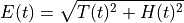
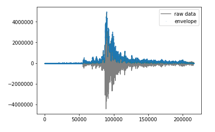

pycheron.sigpro.envelope¶
-
envelope(tr)[source]¶ Calculates the envelope of a seismic signal
Python version of envelope in R IRISSeismic package [1] , originally adapted from seewave package. Returns trace whose data have been replaced with the envelope of the seismic signal. Computes the envelope of the given function. The envelope is determined by adding the squared amplitudes of the function and it’s Hilbert-Transform and then taking the square-root. [2] The envelope at the start/end should not be taken too seriously (same process as obspy.signal.filter.envelope), data are detrended, demeaned and tapered first.
Before calculating the envelope, the seismic trace is ‘cleaned up’ by removing the mean, trend, and by applying a cosine taper. See the DDT function in the psd.noise.deadChannel function for more details.
The seismic envelope is defined as:

where T(t) is the seismic trace and H(t) is the hilbert transform of T(t)
Note
Will append processing results to trC.stats.processing so you can see what’s occurred in trace.
Parameters: tr (obspy.core.trace.Trace) – obspy trace object Returns: Returns trace whose data have been replaced with the envelope of the seismic signal Return type: obspy.core.trace.Trace Example
from obspy.clients.fdsn import Client from obspy import UTCDateTime from pycheron.sigpro.envelope import envelope # Instantiate client object client = Client("IRIS") # Grab data from 2010-02-27 06:00:00 to 2010-02-27 09:00:00 t = UTCDateTime("2010-02-27T06:00:00.000") st = client.get_waveforms("IU","ANMO","00","BHZ",t,t+180*60) tr = st[0] #Create trace envelope trenv = envelope(tr)
Plotting
import matplotlib.pyplot as plt # Plot signal and envelope data plt.plot(tr.data,color = 'grey', label = 'raw data') plt.plot(trenv.data, marker = 'o', markersize = 0.1, linestyle = 'None', label = 'envelope') plt.legend()
References
[1] https://cran.r-project.org/web/packages/IRISSeismic/index.html [2] Kanasewich, E.R., 1981, “Time sequence analysis in geophysics”